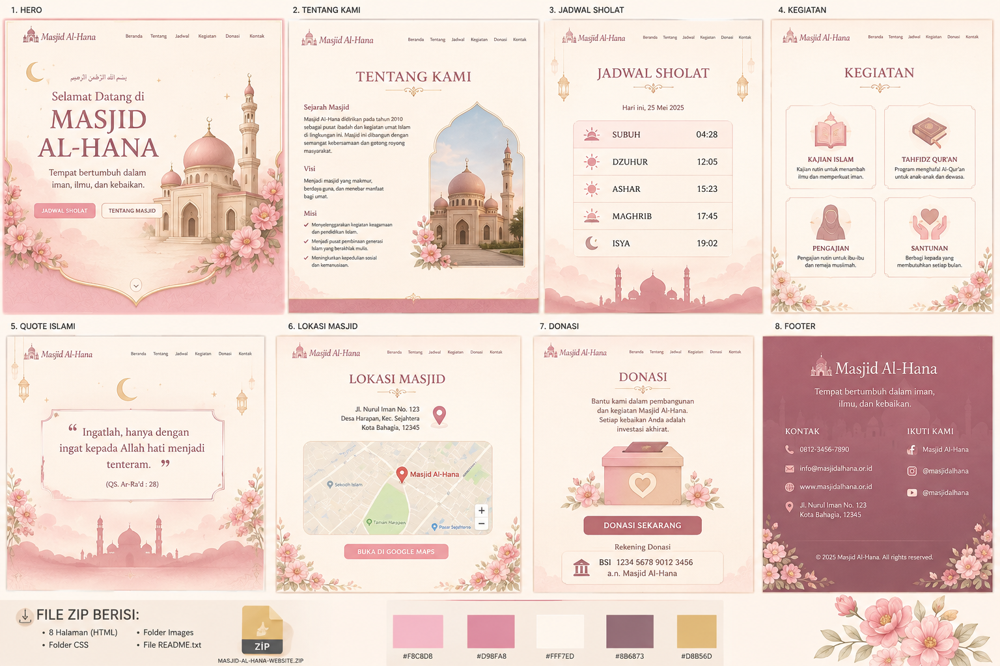

Selamat Datang di Masjid Al-Hana
Tempat bertumbuh dalam iman, ilmu, dan kebaikan.
JADWAL SHOLATTENTANG MASJID
Masjid Al-Hana adalah tempat ibadah, belajar, berbagi, dan tumbuh bersama dalam kebaikan.
Menambah ilmu dan memperkuat iman.
Program menghafal Al-Qur'an.
Belajar bersama dengan suasana hangat.
Berbagi kepada yang membutuhkan.
“Ingatlah, hanya dengan mengingat kepada Allah hati menjadi tenteram.”
QS. Ar-Ra'd: 28Jl. Nurul Iman No. 123, Kota Bahagia
Setiap kebaikan adalah investasi akhirat.
DONASI SEKARANG